ПАМ'ЯТКИ МАРІУПОЛЯ
Популярні визначні пам'ятки Маріуполя, а також цікаві місця для туристів, з описом та фотографією. Найпопулярніші визначні пам'ятки:
- Донецький обласний драматичний театр
- Маріупольський міський сад
- Маріупольський краєзнавчий музей
- Музей Маріупольського порту
- Будинки зі шпилем
- Стара водонапірна вежа
- Екстрім парк
-
ДОНЕЦЬКИЙ ОБЛАСНИЙ ДРАМАТИЧНИЙ ТЕАТР
Донецький регіональний драматичний театр розташований на театральній площі міста Маріуполь, яка знаходиться поруч із міською площею на перехресті вулиці Артьома та проспекта Миру.
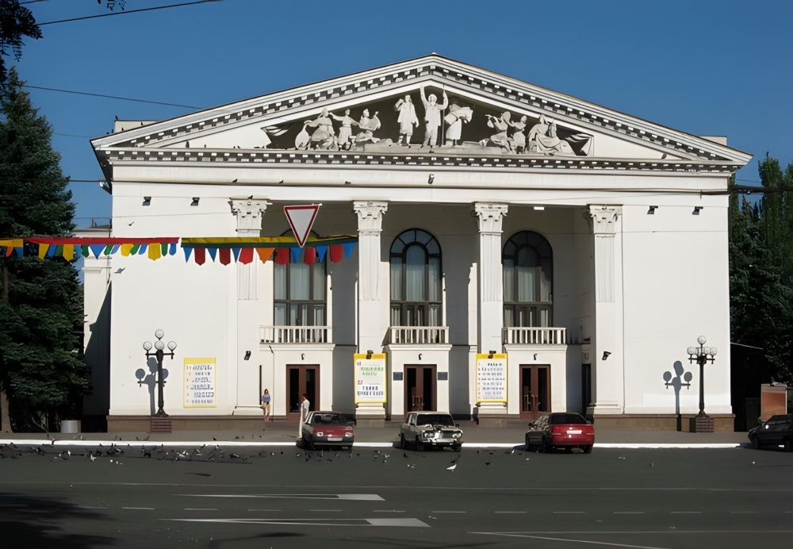 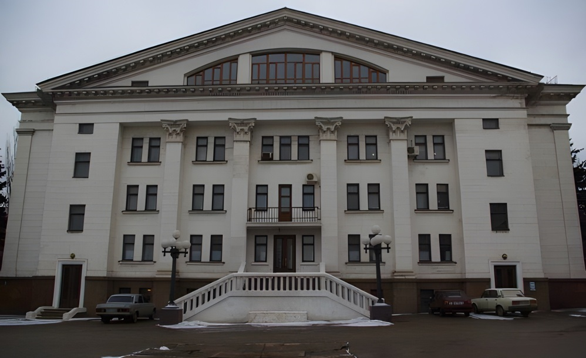
Театр Маріуполя розпочав свою історію в 1878 році, коли в місті була створена перша професійна театральна трупа. Син торговця В. Шаповалова для театру орендував приміщення, в якому артисти Л. Лінітська, І. та Л. Занорські та інші розпочали свій творчий шлях. В 1884 році було ратифіковано статут Маріупольського музично-драматичного суспільства, учасники якого влаштовували концерти, ставили аматорські спектаклі та сприяли естетичному вихованню жителів Маріполя.
У листопаді 1887 року відбулось урочисте відкриття нової театральної будівлі, побудованої за рахунок В. Шаповалова, яка отримала назву Концертний зал (пізніше Зимовий театр). У будівлі театру була величезна сцена, особливе місце для оркестру, зручні стільці та зал на 800 глядачів. Театральний сезон розпочався з постановки п’єси "Ревізор" Н. Гоголя.
У 1880-1890-х роках. відбулись гастролі великих майстрів української сцени: І. Карпенко-Карого, М. Кропівницького, М. Старицького, П. Саксаганського та інших. В 1934 році на основі міського драматичного театру був створений Донецький музично-драматичний театр з постійним перебуванням у місті Маріуполь.
Вперше музично-драматичний театр міста Маріуполь вирушив на гастролі в Полтаву, Кременчуг, Макеєвку, Харків та Суми в 1937 році. У 1947 році театр закрили. Він відновив свою діяльність лише в 1959 році. У той час почали будувати нову будівлю. Того ж року Маріпольський театр отримав статус Донецького Державного. Урочисте відкриття нещодавно зведеної будівлі відбулося у листопаді 1960 року. У 1985 році була відкрита мала сцена театру драми.
12 листопада 2007 року за наказом Міністерства культури та туризму театру було призначено статус академічного. -
МАРІУПОЛЬСЬКИЙ МІСЬКИЙ САД
Міський сад Маріуполя був закладений у 63 році XIX століття на високому пагорбі. Вибір впав на це місце тому, що тут виросли численні фруктові дерева. У своєму розвитку парк пройшов два основні етапи. Перший - це етап деревонасадження, другий - це створення великої пейзажної паркової зони.
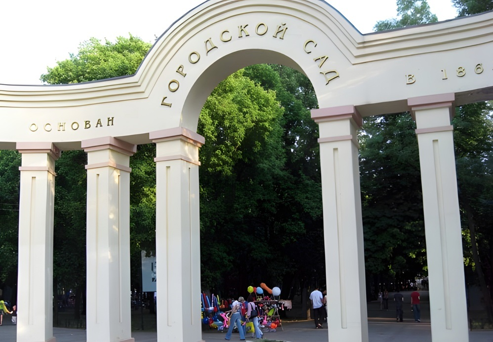 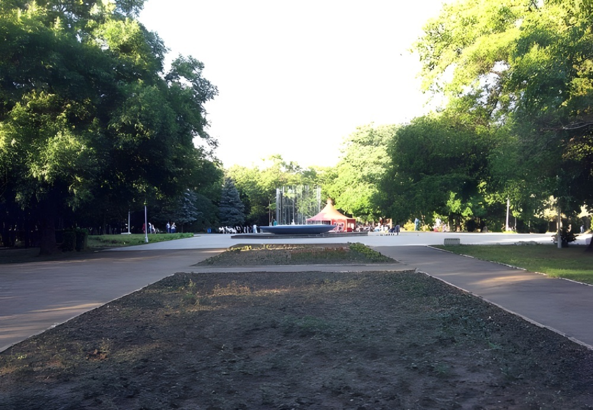
У 89 році XIX століття за клопотанням міської думи знаменитим маріупольським садівником та громадським діячем Георгієм Георгійовичем Псалти в саду було проведено повне та радикальне перепланування. У 1910 році після встановлення системи водопостачання у парку з'явився фонтан. Міський сад був відкритий для "відпочинку та різних розваг поважної публіки Маріуполя".
У різний час сад відвідували А.І. Куінджі та А.С. Серафімович, К.Ф. Богаєвський та А.С. Новіков-Прибой. А Великим Князем Костянтином Миколайовичем, який відвідав Маріуполь у 1872 році, у міському саду було посаджено власноручно навіть два дерева.
На території саду є ряд культурних об'єктів: літній кінотеатр, палаци спорту та дитячої та юнацької творчості, дитячий майданчик тощо. Також постійно увагу громадян та гостей привертають атракціони, розташовані в міському саду. Серед них «Колесо зустрічей», «Колесо огляду», «Веселі горки», «Сонце», «Човни» та тір. Міський сад - центральний міський парк культури та відпочинку Маріуполя. -
МАРІУПОЛЬСЬКИЙ КРАЄЗНАВЧИЙ МУЗЕЙ
Маріупольський краєзнавчий музей - це перший державний музей у донецькому регіоні та найбільший музей в Приазов'і. Він був заснований у лютому 1920 року міським відділом народної освіти Маріупольського комітету. Перша експозиція краєзнавчего музею була створена в 1920 році. Основними видами діяльності музею є: науково-дослідна, експозиційна, фондова, збиральна та науково-просвітницька
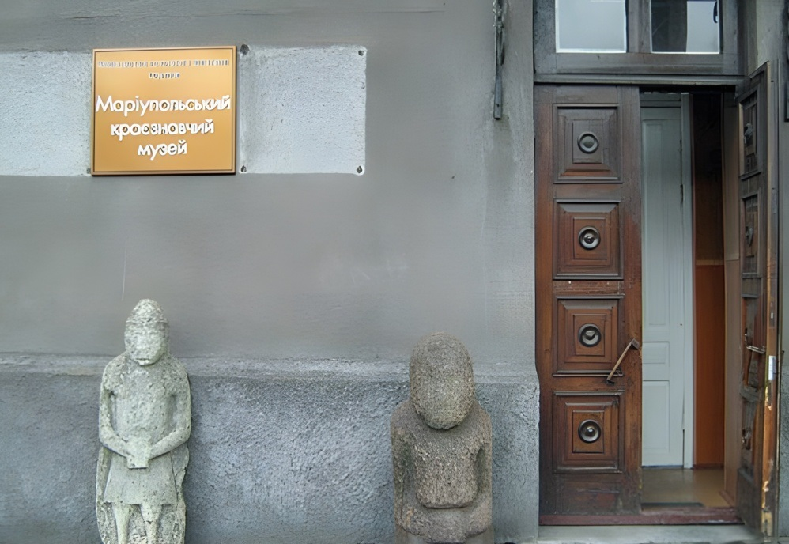 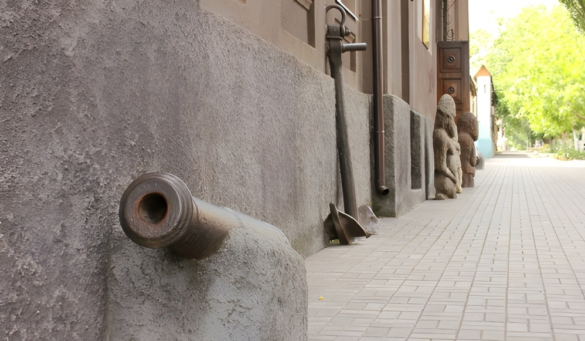
З 1937 року музей Маріуполя, здобувши статус регіонального, став відомим як Донецький регіональний краєзнавчий музей у місті Маріуполь. У 1950 році був заснован регіональний краєзнавчий музей у місті Донецьк та маріпольському повернули статус музею місцевого значення.
На сьогоднішній день експозиційний фонд Маріупольського краєзнавчего музею складається з семи залів, в яких зберігаються понад 50 000 експонатів, включаючи речові, образотворчі, письмові (друковані та рукописні), нумізматичні, археологічні, природні та інші. Літературний фонд наукової бібліотеки має понад 17 000 книг.
Кожна колекція музейних експонатів має свої унікальні екземпляри: знаряддя праці та кістки бізонів з Амвросіївської стоянки (16 тис. років до н.е.). Також до унікальних музейних предметів можна віднести скіфську бронзову пряжку у вигляді голови лося (5 ст. до н.е.), бронзові дзеркала східного походження Золотої орди 14 століття та інше. Постійна експозиція музею висвітлює історію півдня Донецької області та природні умови краю – від первісних часів до сьогодення. -
МУЗЕЙ МАРІУПОЛЬСЬКОГО ПОРТУ
Представлена в двох залах експозиція музею Маріупольського порту розповідає про історію порту від моменту його заснування до наших днів, про працівників та керівництво порту, про його розвиток та досягнення. У ній представлено безліч фотографій та копій історичних документів, макети кораблів.
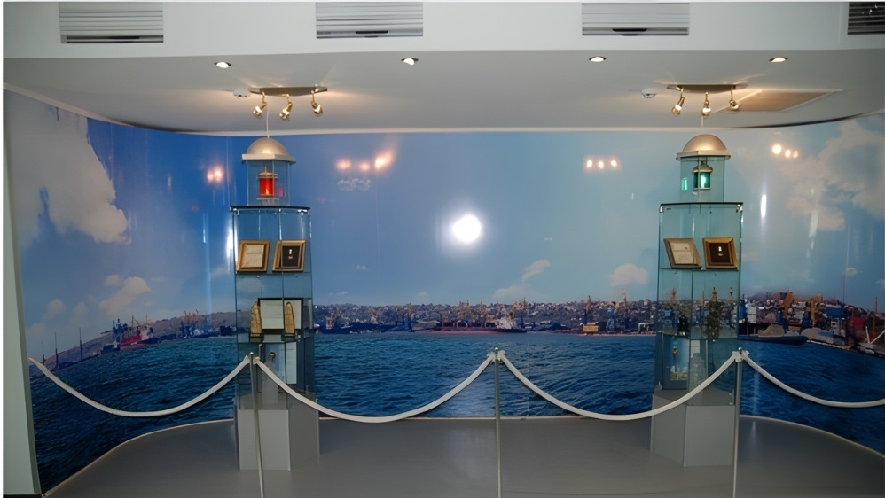 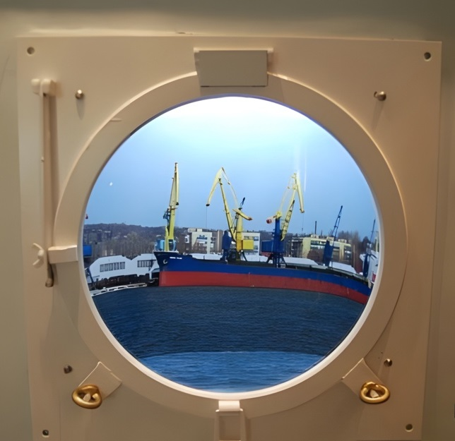
Профспілкова організація Маріупольського морського торговельного порту кілька років виношувала плани створення музею історії. Старий музей, розташований у будівлі адміністрації порту, давно зжив себе та не відповідав реаліям сучасності. У середині 2012 року новий музей було відкрито.
Підготовчі роботи щодо проекту проводилися ентузіастами з числа членів профкому. Вони знайшли підтримку як серед колективу, так і серед керівництва порту, що дало змогу втілити цю ідею у життя. Це була не легка праця, в якій брали участь багато фахівців-професіоналів. У підготовці музейної експозиції брали участь також дизайнери порту, які створили проекти вітрин, стендів та панно. Стенди були створені нові, які раніше ніколи не робили у порту. У процесі їх виготовлення застосовано низку технологій: пап'є-маше, згинання пластику, лиття, фрезерування та шліфування ДСП, пластику та металу. Результатом копіткої праці стали гідні стенди. -
БУДИНКИ ЗІ ШПИЛЕМ
Однією з основних визначних пам'яток міста Маріуполя стали два житлові будинки зі шпилем – східний та західний. Будинки розміщуються біля Театральної площі на перехресті вулиці Артема та проспекта Миру.
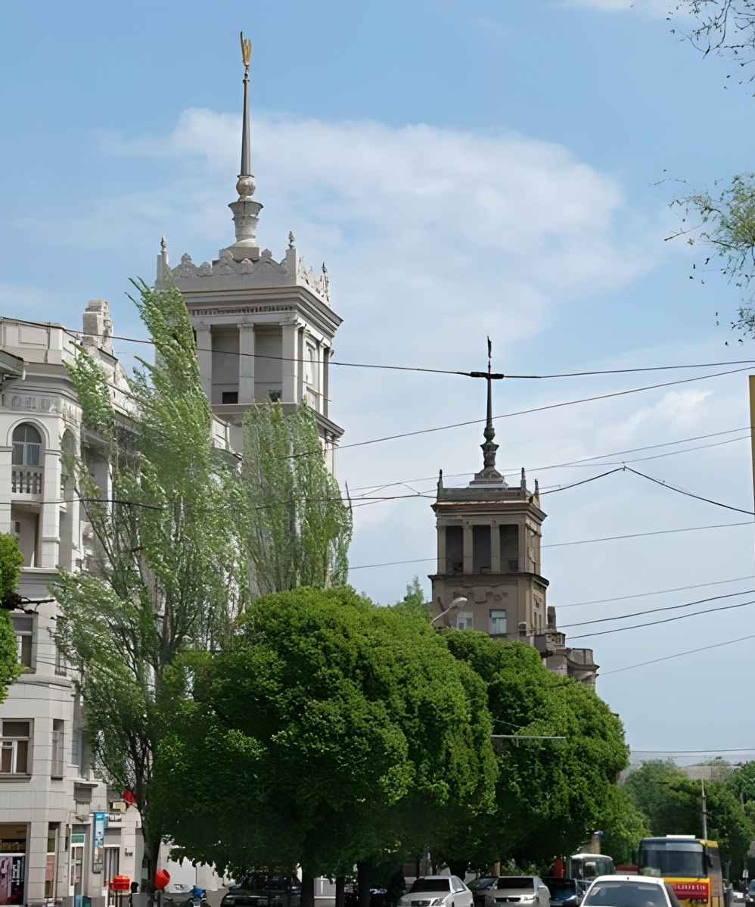
Східний та західний будинки зі шпилем було зведено у 1953 році на місці колишньої будівлі міськвиконкому, яка була зруйнована в період війни, за проектом відомого київського архітектора Л. Яновицького (харківський інститут «Міськбудпроект»). Два будинки розділені між собою проїжджою частиною та тротуарами вулиці Артема. У 2000 році західний будинок зі шпилем пофарбували в білий колір, а східний так і залишився натуральним цегляним кольором. Обидві будівлі були виконані в традиціях класицизму середини 20 століття: масивний рустований цоколь, ліпнина на стінах, пілони та колони іонічного ордера, арочні прорізи в еркерах, кутові частини будинків прикрашають шпилі та фігурні парапети. Завдяки шпилям ці будинки є архітектурним акцентом перетину вулиці Артема та проспекта Миру. У центрі – семиповерхова частина, до якої прилягають чотири та п'ять поверхові крила.
Фактично, дві висотки досить довгий час домінували у ландшафті центральної частини Маріуполя, поки поряд з ними не встановили купол храму Покрови Божої Матері, який став найвищим у Донецькій області.
До кінця 1990-х років будинки помітно занепали. Тоді вперше постало питання про реставрацію будівель. Виявилося, що східний будинок знаходиться на балансі міста, а західний – одного із підприємств. Згодом, пощастило лише другій будівлі – 1997 року у ній було проведено реконструкцію. Східна будівля не ремонтувалася з 1971 року До початку 2010-х років, коли ситуація вже була критичною, було ухвалено рішення розпочати ремонтні роботи другої будівлі.
Східні та західні будинки зі шпилем видно від східних прохідних комбінату «Азовсталь», з площі Кірова та навіть з Азовського моря. -
СТАРА ВОДОНАПІРНА ВЕЖА
Одним із символів міста Маріуполя є стара водонапірна вежа, яка розміщується у Центральному районі міста на перетині вулиць Енгельса та Соборною. Ця цікава в архітектурно-художньому відношенні будівля розташована в найвищій точці міста, завдяки чому височить над забудовою, що оточує її.
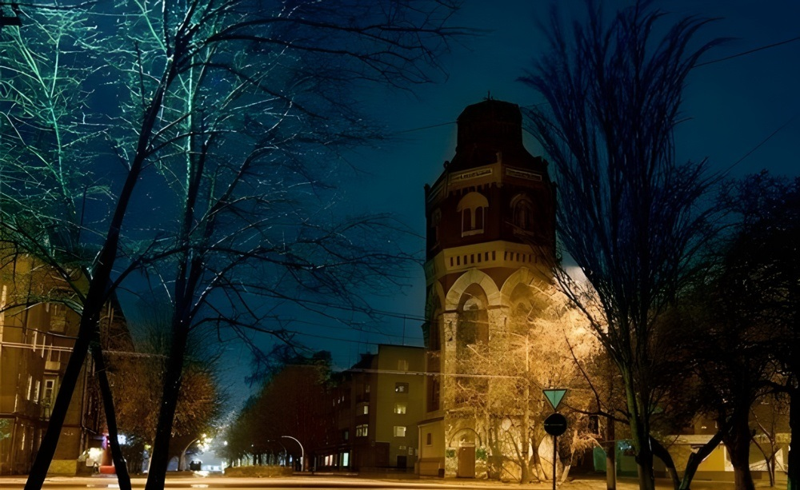
Оскільки на початку 20 століття у Маріуполі ще не було водопроводу, то воду в бочках від джерела питної води до будинків мешканців міста доставляли водовози за певну плату. У квітні 1908 року міська дума Маріуполя затвердила проект будівництва водопровідної мережі, складений інженером та міським архітектором Віктором Олександровичем Нільсеном. Початок будівництва водонапірної вежі та міського водопроводу випав на грудень 1909 року. Автор проекту водонапірної вежі В. Нільсен доповнив її оглядовою пожежною вежею, додавши їй ще й протипожежне призначення.
Водопровід міста Маріуполь розпочав свою дію 3 липня 1910 року. З такої нагоди на міських вулицях були побудовані спеціальні водорозбірні колонки. Окремі лінії були проведені також до будинків багатих городян. На четвертому рівні вежі розміщувався бак із водою для центра міста.
У 1932 році у зв'язку із заміною поршневих насосів башта втратила своє функціональне значення. Оскільки поряд розташовувалась міська пожежна частина, то вежа просто служила пожежною каланчою. Після Другої світової війни вежа прийшла в запустіння. Але незважаючи на це, 1983 року вона була визнана пам'яткою архітектури місцевого значення.
Наприкінці 80-х будівлю вежі планували відреставрувати та розмістити у ній музей містобудування Маріуполя. Але у 1996 році у старій водонапірній вежі з'явилися постійні мешканці – було відкрито відділення банку. У 2012 році відділення банку було ліквідовано, а будівля вежі перейшла на баланс міста. -
ЕКСТРІМ ПАРК
Маріупольський Екстрім парк є чудовим місцем для екстремального відпочинку. Його відкриття відбулося до Дня металурга у липні 2003 року. У парку встановлено атракціони голландського та італійського виробництва. Загалом у парку функціонує чотирнадцять сучасних атракціонів, серед яких такі як «Кенгуру», «Лінива річка», залізниця для дітей, «Лупінг», «Оса».
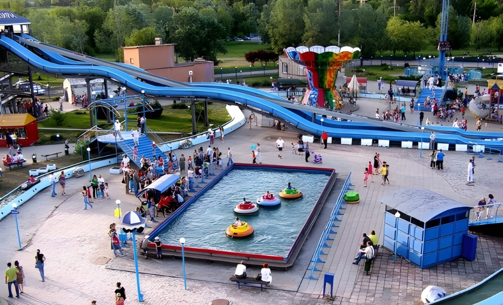 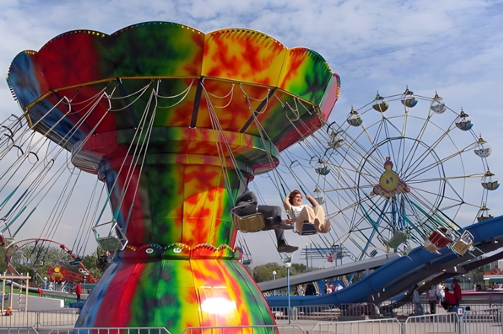
Пам'яткою парку є атракціон «Колесо огляду», що працює з 2003 року, заввишки 31 метр. Водночас 72 особи можуть оглядати чудові краєвиди річки Кальчик та міста, насолоджуючись неспішною поїздкою на «Колісі огляду». Не можна пройти повз водний спуск «Харакірі», «Дикого поїзда», «Вежі вільного падіння», «Човникова станція».
Крім того, навколо атракціонів створена справжня зона радості та веселощів - на території Екстрім парку є впорядкований дитячий майданчик, гостинні кафе, численні торгові павільйони. Для любителів є мультимедійний тир.
У 2003 році Екстрім парку присудили третє місце як культурно-спортивній споруді у всеукраїнському конкурсі «Кращі споруди та будівлі, збудовані та прийняті в експлуатацію на території України».